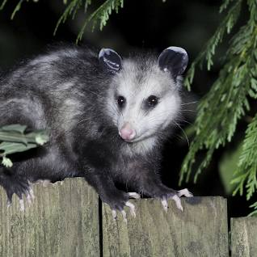

possum

possums are marsupials known for their unique appearance, nocturnal habits, and adaptable nature.
Physical Characteristics
- Size: possums vary in size, with some species being small and others larger, ranging from around 6 to 40 inches in length.
- Tail: They often have a prehensile tail that can grasp and hold onto objects.
- Nocturnal Eyes: Opossums have large eyes adapted for night vision.
Behavior and Habitat
- Habitat: Opossums are found in North, Central, and South America, inhabiting various environments such as forests, grasslands, and urban areas.
- Nocturnal Behavior: They are primarily nocturnal, being more active during the night.
- Play Dead: Opossums are known for their "playing dead" behavior when threatened, which can discourage predators.
Diet
Opossums are opportunistic omnivores and have a varied diet that includes insects, fruits, small animals, and carrion.
Interesting Facts
- Marsupial Characteristics: Opossums are marsupials, which means they carry and nurse their young in a pouch.
- Slow Reproductives: Opossums have short gestation periods and give birth to underdeveloped young, which continue to develop in the pouch.
- Survival Adaptations: Their ability to adapt to various environments and their omnivorous diet contribute to their survival success.